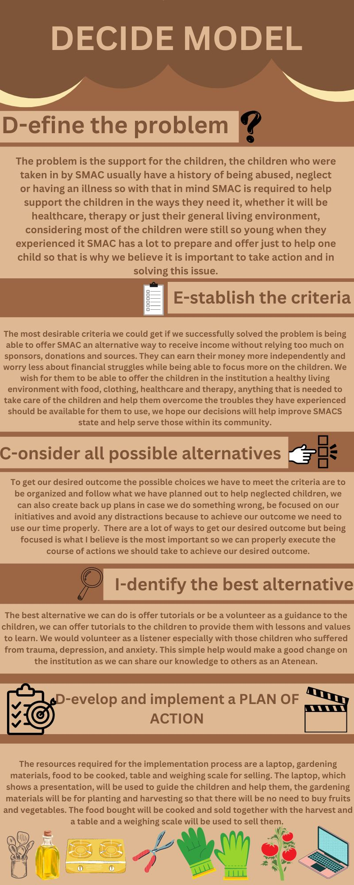
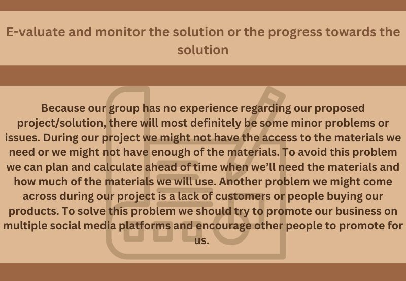

Creator of the Webpage - Jarynn Ashley Daned
-This is Jarynn Ashley Daned. She is 14 years old born on November 17, 2007. She studies at Ateneo De Davao junior high school university and is a grade 9 student from St. Peter Favre. She is the designer/coder of the Mapeh webpage. thanks to Japal Guiani, a group member, for helping her code the website. She and her groupmates were able to cooperate to successfully created the whole website.